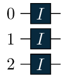
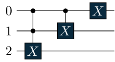
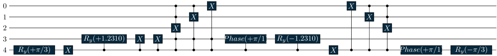
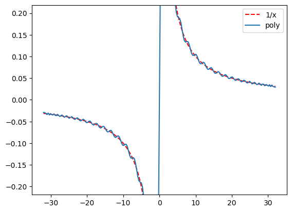

import numpy as np
import matplotlib.pyplot as plt
import unitaria as ut
np.set_printoptions(precision=3, suppress=True, threshold=100)Block Encoding the 1D Poisson Problem
This notebook provides an example code for encoding and solving a prototypical boundary value problem involving the Laplace operator using unitaria.
1. Problem Setup and Constants
On the unit interval \(D = [0, 1]\) we consider the Poisson equation with homogeneous Dirichlet boundary condition, \[\begin{align*} -\Delta u &= f && \text{in }D \\ u &= 0 && \text{on }\partial D \end{align*}\] Given a right-hand side \(f \in L^2(D)\), we seek the unique weak \(u \in H^1_0(D)\), which satisfies \[ a(u, v):= (\nabla u, \nabla v)_{L^2} = (v, f)_{L^2} \qquad\forall v \in H^1_0(D). \]
2. Discretizing the Poisson problem
To discretize the variational problem we choose a finite-dimensional subspace of \(H^1_0(D)\) consisting of piecewise linear functions on a uniform subdivision of \(D\) into \(2^N\) subintervals of width \(h = 2^{-N}\), \[ D = [x_0, x_1] \cup \cdots \cup [x_{2^N - 1}, x_{2^N}], \] with vertices \(x_j := jh\), \(j = 0, \ldots, 2^N\). This corresponds to refining the unit interval \(N\) times uniformly by bisection. For the examples below we choose the refinement level
N = 3We now consider the basis of hat functions \(\Lambda_1, \dots, \Lambda_{2^N-1}\) (the simplest example of finite element basis functions) associated to the interior vertices \(x_1, \ldots, x_{2^N - 1}\) (the boundary vertices \(x_0\) and \(x_{2^N}\) are excluded by the homogeneous Dirichlet condition), which are continuous, piecewise linear on the above intervals, and satisfy \[ \Lambda_j(x_k) = \begin{cases} 1 & j = k, \\ 0 & j \neq k. \end{cases} \] The discrete stiffness matrix \(A \in \mathbb{R}^{(2^N-1)\times(2^N-1)}\) (the matrix representation of \(a(\cdot,\cdot)\) in the hat function basis) is given by\[A_{jk} = a(\Lambda_j, \Lambda_k) = \begin{cases} 2^{N + 1} & \text{if } j = k \text{ (diagonal)}, \\ -2^N & \text{if } j = k-1 \text{ or } j = k+1 \text{ (super-/subdiagonal)}. \end{cases} \]
3. Block encoding the stiffness matrix
To perform computations involving the stiffness matrix on a quantum computer, we need to construct a block encoding of \(A\), i.e. a unitary matrix that embeds \(A\) in its upper-left block (see Quantum singular value transformation and beyond: exponential improvements for quantum matrix arithmetics for details). This is where unitaria comes in.
To efficiently block encode \(A\), we exploit its tridiagonal structure and decompose it into simpler components, \[ A = 2^N \begin{bmatrix} 2 & -1 & & \\ -1 & \ddots & \ddots & \\ & \ddots & \ddots & -1 \\ & & -1 & 2 \end{bmatrix} = 2^N \bigl(2I - X - X^T\bigr), \] where \(I = I_{2^N - 1}\) is the identity and \(X\) is the subdiagonal shift matrix \[ X = \begin{bmatrix} 0 & & \\ 1 & \ddots & \\ & \ddots & 0 \end{bmatrix}. \] Each of these three matrices \(I\), \(X\), and \(X^T\) admits an efficient block encoding, which can then be combined linearly to yield a block encoding of \(A\).
The matrix \(I\)
The identity is straightforward to block encode. unitaria provides a built-in routine for this.
Id = ut.Identity(dim=2**N - 1)The variable Id contains the block encoding of the identity: the encoded operation together with the quantum circuit, normalisation factor, and subspace information required to use it. The method .circuit() returns the circuit, which we can visualise by calling .draw() on it.
Id.circuit().draw()
Encoding the identity simply means doing nothing, so the circuit applies the identity gate to each qubit. The circuit acts on \(m = 3\) qubits, since the state space dimension \(2^m = 8\) must be at least as large as the matrix dimension \(2^N - 1 = 7\). The circuit therefore encodes the full \(8 \times 8\) identity. The attributes Id.subspace_in and Id.subspace_out specify that only the first 7 rows and columns are used. The normalisation factor is 1, as expected for a matrix with spectral norm 1.
print(Id.subspace_in.enumerate_basis())
print(Id.subspace_out.enumerate_basis())
Id.normalization[0 1 2 3 4 5 6]
[0 1 2 3 4 5 6]1We can also print the encoded matrix directly.
print(Id.toarray())[[1.+0.j 0.+0.j 0.+0.j 0.+0.j 0.+0.j 0.+0.j 0.+0.j]
[0.+0.j 1.+0.j 0.+0.j 0.+0.j 0.+0.j 0.+0.j 0.+0.j]
[0.+0.j 0.+0.j 1.+0.j 0.+0.j 0.+0.j 0.+0.j 0.+0.j]
[0.+0.j 0.+0.j 0.+0.j 1.+0.j 0.+0.j 0.+0.j 0.+0.j]
[0.+0.j 0.+0.j 0.+0.j 0.+0.j 1.+0.j 0.+0.j 0.+0.j]
[0.+0.j 0.+0.j 0.+0.j 0.+0.j 0.+0.j 1.+0.j 0.+0.j]
[0.+0.j 0.+0.j 0.+0.j 0.+0.j 0.+0.j 0.+0.j 1.+0.j]]The matrix \(X\)
The matrix \(X\) has \(1\)s on its first subdiagonal, mapping the \(j\)-th basis vector to the \((j+1)\)-th basis vector. This is the binary increment operation \(|x\rangle \mapsto |x+1\rangle\).
# Basic shift operator
X_periodic = ut.Increment(bits=N)
print(X_periodic.toarray())
X_periodic.circuit().draw()[[0.+0.j 0.+0.j 0.+0.j 0.+0.j 0.+0.j 0.+0.j 0.+0.j 1.+0.j]
[1.+0.j 0.+0.j 0.+0.j 0.+0.j 0.+0.j 0.+0.j 0.+0.j 0.+0.j]
[0.+0.j 1.+0.j 0.+0.j 0.+0.j 0.+0.j 0.+0.j 0.+0.j 0.+0.j]
[0.+0.j 0.+0.j 1.+0.j 0.+0.j 0.+0.j 0.+0.j 0.+0.j 0.+0.j]
[0.+0.j 0.+0.j 0.+0.j 1.+0.j 0.+0.j 0.+0.j 0.+0.j 0.+0.j]
[0.+0.j 0.+0.j 0.+0.j 0.+0.j 1.+0.j 0.+0.j 0.+0.j 0.+0.j]
[0.+0.j 0.+0.j 0.+0.j 0.+0.j 0.+0.j 1.+0.j 0.+0.j 0.+0.j]
[0.+0.j 0.+0.j 0.+0.j 0.+0.j 0.+0.j 0.+0.j 1.+0.j 0.+0.j]]
Note that this is not quite the matrix we wanted. The block encoding X_periodic implements the increment modulo \(2^N\), so incrementing \(2^N - 1\) wraps around to \(0\), placing a \(1\) in the upper-right corner. This would give a block encoding of the periodic version of the stiffness matrix, rather than the one with Dirichlet boundary conditions.
A_periodic = 2**N * (2 * ut.Identity(dim=2**N) - X_periodic - X_periodic.adjoint())
print(A_periodic.toarray())
A_periodic.circuit().draw()[[16.+0.j -8.+0.j 0.+0.j 0.+0.j 0.+0.j 0.+0.j 0.+0.j -8.+0.j]
[-8.+0.j 16.+0.j -8.+0.j 0.+0.j 0.+0.j 0.+0.j 0.+0.j 0.+0.j]
[ 0.+0.j -8.+0.j 16.+0.j -8.+0.j 0.+0.j 0.+0.j 0.+0.j 0.+0.j]
[ 0.+0.j 0.+0.j -8.+0.j 16.+0.j -8.+0.j 0.+0.j 0.+0.j 0.+0.j]
[ 0.+0.j 0.+0.j 0.+0.j -8.+0.j 16.+0.j -8.+0.j 0.+0.j 0.+0.j]
[ 0.+0.j 0.+0.j 0.+0.j 0.+0.j -8.+0.j 16.+0.j -8.+0.j 0.+0.j]
[ 0.+0.j 0.+0.j 0.+0.j 0.+0.j 0.+0.j -8.+0.j 16.+0.j -8.+0.j]
[-8.+0.j 0.+0.j 0.+0.j 0.+0.j 0.+0.j 0.+0.j -8.+0.j 16.+0.j]]
Boundary Conditions
The increment operator is cyclic: it wraps around from \(2^N - 1\) back to \(0\), which places unwanted \(-1\) entries in the corners of the stiffness matrix and is incompatible with Dirichlet boundary conditions. To remove this wrap-around, we restrict the operator to a subspace that excludes the boundary states. This is done internally via multiplication with a projection matrix. Let us first inspect the total space of the X_periodic block encoding.
A = A_periodic[:-1, :-1]Constructing the right-hand side
To solve the system \(Au = b\), we need to encode the vector \(b\), which is determined by the forcing term \(f\). Choosing \(f \equiv 1\) gives \(b = 2^{-N}[1, \ldots, 1]^T\). The function ConstantVector in unitaria encodes this vector, though state preparation is not efficient in general.
b = ut.ConstantVector(2 ** (-N) * np.ones(2**N - 1))
print(f"depth = {b.circuit().depth()}")depth = 11For this specific choice of \(f\), however, an efficient encoding exists. Up to the same projection as before, \(b\) is a tensor product of \(N\) two-dimensional vectors, which can be constructed efficiently using ut.Tensor (or the & operator).
vec2d = ut.ConstantVector(1 / 2 * np.ones(2))
b = (vec2d & vec2d & vec2d)[:-1]
print(f"depth = {b.circuit().depth()}")
b.toarray()depth = 2array([0.125+0.j, 0.125+0.j, 0.125+0.j, 0.125+0.j, 0.125+0.j, 0.125+0.j,
0.125+0.j])Computing the inverse
A quantum linear system solver requires an upper bound on the condition number of \(A\). Here we compute it numerically.
condition = np.linalg.cond(A.toarray(), p=2)
conditionnp.float64(25.274142369088185)The condition number grows large as \(N\) increases — as seen above for \(N = 3\), it is already \(25\). A systematic treatment via preconditioning is given in Quantum realization of the Finite Element Method, but this is outside the scope of this tutorial.
To invert A we apply the Pseudoinverse function. This uses the QCheb solver from Constrained Optimal Polynomials for Quantum Linear System Solvers Matthias.
A_inv = ut.Pseudoinverse(A, condition=condition, tolerance=0.05)Internally, Pseudoinverse is implemented via ut.QSVT. In unitaria, operations built from other operations, such as Pseudoinverse, are subclasses of ProxyNode, which allows us to inspect their underlying definition.
print(type(A_inv.get_definition()))
print(A_inv.get_definition().coefficients.angles)
print(len(A_inv.get_definition().coefficients.angles))<class 'unitaria.nodes.qsvt.qsvt.QSVT'>
[-2.359 -1.567 -1.575 -1.566 -1.577 -1.564 -1.578 -1.562 -1.581 -1.56
-1.583 -1.557 -1.586 -1.555 -1.588 -1.552 -1.592 -1.548 -1.595 -1.545
-1.598 -1.542 -1.602 -1.538 -1.605 -1.535 -1.608 -1.532 -1.611 -1.529
-1.614 -1.527 -1.616 -1.525 -1.617 -1.524 -1.618 -1.524 -1.617 -1.525
-1.616 -1.526 -1.614 -1.528 -1.528 -1.614 -1.526 -1.616 -1.525 -1.617
-1.524 -1.618 -1.524 -1.617 -1.525 -1.616 -1.527 -1.614 -1.529 -1.611
-1.532 -1.608 -1.535 -1.605 -1.538 -1.602 -1.542 -1.598 -1.545 -1.595
-1.548 -1.592 -1.552 -1.588 -1.555 -1.586 -1.557 -1.583 -1.56 -1.581
-1.562 -1.578 -1.564 -1.577 -1.566 -1.575 -1.567 -2.359]
88The solver works by approximating the function \(1/x\) by a polynomial, which is then applied to the singular values of \(\tilde{A}\) via QSVT.
poly = A_inv.get_definition().polynomial
xs = np.linspace(-A.normalization, A.normalization, 200)
plt.plot(xs[xs > 0], 1 / xs[xs > 0], "r--", label="1/x")
plt.plot(xs[xs < 0], 1 / xs[xs < 0], "r--")
plt.plot(xs, poly(xs), label="poly")
plt.legend()
_ = plt.ylim([-7 / A.normalization, 7 / A.normalization])
The plot shows the polynomial approximation to \(1/x\) on the spectral range of \(\tilde{A}\). We can now apply the inverse to the right-hand side. As in NumPy, matrix-vector and matrix-matrix products use the @ operator.
solution = A_inv @ bVerification and simulation
We verify the result in two ways: by converting the block encoding to an explicit matrix via .toarray(), and by running the internal quantum simulator via .simulate(). Both checks, along with a comparison to a reference value, are performed automatically by ut.verify.
dim = 2**N - 1
A_reference = 2**N * (2 * np.eye(dim) - np.eye(dim, k=-1) - np.eye(dim, k=1))
reference = np.linalg.solve(A_reference, 2 ** (-N) * np.ones(dim))
ut.verify(A, A_reference)
ut.verify(solution, reference, atol=0.15)In practice, we are typically interested in a scalar quantity derived from the solution, such as the \(L^2\) norm of \(u\). This is approximated by \(2^{-N/2}\) times the Euclidean norm of the solution vector.
measured_qoi = solution.simulate_norm() * 2 ** (-N / 2)
print(f"Measured quantity of interest: {measured_qoi}")
print(f"Classically computed quantity of interest: {solution.compute_norm() * 2 ** (-N / 2)}")Measured quantity of interest: 0.08296009451523294
Classically computed quantity of interest: 0.08296009451513568We compare this against a reference value computed on a finer grid.
N_reference = 12
dim = 2**N_reference - 1
reference = np.linalg.solve(
2**N_reference * (2 * np.eye(dim) - np.eye(dim, k=-1) - np.eye(dim, k=1)), 2 ** (-N_reference) * np.ones(dim)
)
reference_qoi = np.linalg.norm(reference) * 2 ** (-N_reference / 2)
print(f"Reference quantity of interest: {reference_qoi}")
print(f"Error: {abs(measured_qoi - reference_qoi):.2e}")Reference quantity of interest: 0.09128709291789493
Error: 8.33e-03The error is within the specified tolerance.
Under the hood
To illustrate the complexity of the block encodings constructed automatically by unitaria, we can inspect the full computational graph by calling .draw(verbose=True), which expands all ProxyNode definitions. This reveals that every operation ultimately reduces to a small set of primitive node types.
A_inv.tree(verbose=True)╭─ Pseudoinverse{'condition': np.float64(25.274142369088185), 'tolerance': 0.05, 'guaranteed': False} ────────────╮
│ QSVT{'polynomial': Chebyshev([ 0. , 0.062, 0. , -0.06 , 0. , 0.058, 0. , -0.056, │
│ 0. , 0.054, 0. , -0.052, 0. , 0.051, 0. , -0.049, │
│ 0. , 0.047, 0. , -0.045, 0. , 0.043, 0. , -0.042, │
│ 0. , 0.04 , 0. , -0.038, 0. , 0.037, 0. , -0.035, │
│ 0. , 0.033, 0. , -0.032, 0. , 0.03 , 0. , -0.029, │
│ 0. , 0.027, 0. , -0.026, 0. , 0.024, 0. , -0.023, │
│ 0. , 0.022, 0. , -0.02 , 0. , 0.019, 0. , -0.018, │
│ 0. , 0.017, 0. , -0.016, 0. , 0.015, 0. , -0.014, │
│ 0. , 0.012, 0. , -0.012, 0. , 0.011, 0. , -0.01 , │
│ 0. , 0.009, 0. , -0.008, 0. , 0.007, 0. , -0.007, │
│ 0. , 0.006, 0. , -0.005, 0. , 0.005, 0. , -0.004], domain=[-32., 32.], window=[-1., 1.], │
│ symbol='x'), 'normalization': np.float64(0.7488139573322291)} │
│ └── Adjoint │
│ └── child 0 │
╰─────────────────────────────────────────────────────────────────────────────────────────────────────────────────╯
└── ╭─ Index{'index_in': slice(0, 7, 1), 'index_out': slice(0, 7, 1)} ────────────────────────────────────────────╮
│ ╭─ Mul ───────────────────────────────────────────────────────────────────────────────────────────────────╮ │
│ │ UnsafeMul │ │
│ │ ├── UnsafeMul │ │
│ │ │ ├── Tensor │ │
│ │ │ │ ├── Identity{'subspace': Subspace("0")} │ │
│ │ │ │ └── UnsafeMul │ │
│ │ │ │ ├── child 0 │ │
│ │ │ │ └── Adjoint │ │
│ │ │ │ └── Identity{'subspace': Subspace("000###")} │ │
│ │ │ └── SubspaceCircuit │ │
│ │ └── Tensor │ │
│ │ ├── Identity{'subspace': Subspace("0")} │ │
│ │ └── UnsafeMul │ │
│ │ ├── Identity{'subspace': Subspace("00###")} │ │
│ │ └── child 1 │ │
│ ╰─────────────────────────────────────────────────────────────────────────────────────────────────────────╯ │
│ ├── ╭─ Mul ───────────────────────────────────────────────────────────────────────────────────────────────╮ │
│ │ │ UnsafeMul │ │
│ │ │ ├── UnsafeMul │ │
│ │ │ │ ├── Tensor │ │
│ │ │ │ │ ├── Identity{'subspace': Subspace("0")} │ │
│ │ │ │ │ └── UnsafeMul │ │
│ │ │ │ │ ├── child 0 │ │
│ │ │ │ │ └── Adjoint │ │
│ │ │ │ │ └── Identity{'subspace': Subspace("00###")} │ │
│ │ │ │ └── SubspaceCircuit │ │
│ │ │ └── Tensor │ │
│ │ │ ├── Identity{'subspace': Subspace("0")} │ │
│ │ │ └── UnsafeMul │ │
│ │ │ ├── Identity{'subspace': Subspace("00###")} │ │
│ │ │ └── child 1 │ │
│ │ ╰─────────────────────────────────────────────────────────────────────────────────────────────────────╯ │
│ │ ├── Projection{'subspace_from': Subspace("00###"), 'subspace_to': Subspace("00") & (Subspace("##") | │
│ │ │ (Subspace("#") | Subspace("0")))} │
│ │ └── child 0 │
│ └── Adjoint │
│ └── Projection{'subspace_from': Subspace("00###"), 'subspace_to': Subspace("00") & (Subspace("##") | │
│ (Subspace("#") | Subspace("0")))} │
╰─────────────────────────────────────────────────────────────────────────────────────────────────────────────╯
└── Scale{'scale': np.int64(8), 'absolute': False}
└── ╭─ Add ───────────────────────────────────────────────────────────────────────────────────────────────╮
│ UnsafeMul │
│ ├── UnsafeMul │
│ │ ├── Adjoint │
│ │ │ └── Tensor │
│ │ │ ├── ConstantVector{'vec': array([1.732, 1. ])} │
│ │ │ └── Identity{'subspace': Subspace("0###")} │
│ │ └── ╭─ BlockDiagonal ─────────────────────────────────────────────────────────────────────────╮ │
│ │ │ UnsafeMul │ │
│ │ │ ├── UnsafeMul │ │
│ │ │ │ ├── UnsafeMul │ │
│ │ │ │ │ ├── Projection{'subspace_from': (Subspace("0000") | Subspace("####")), │ │
│ │ │ │ │ │ 'subspace_to': Subspace("#0###")} │ │
│ │ │ │ │ └── ModifyControl{'expand_control': Subspace("#"), 'swap_control_state': False} │ │
│ │ │ │ │ └── Controlled │ │
│ │ │ │ │ └── child 1 │ │
│ │ │ │ └── Projection{'subspace_from': Subspace("#0###"), 'subspace_to': (Subspace("0000") │ │
│ │ │ │ | Subspace("####"))} │ │
│ │ │ └── UnsafeMul │ │
│ │ │ ├── UnsafeMul │ │
│ │ │ │ ├── Projection{'subspace_from': (Subspace("0###") | Subspace("0000")), │ │
│ │ │ │ │ 'subspace_to': Subspace("#0###")} │ │
│ │ │ │ └── ModifyControl{'expand_control': Subspace(), 'swap_control_state': True} │ │
│ │ │ │ └── Controlled │ │
│ │ │ │ └── child 0 │ │
│ │ │ └── Projection{'subspace_from': Subspace("#0###"), 'subspace_to': (Subspace("0###") │ │
│ │ │ | Subspace("0000"))} │ │
│ │ ╰─────────────────────────────────────────────────────────────────────────────────────────╯ │
│ │ ├── Scale{'scale': np.int64(1), 'absolute': True} │
│ │ │ └── UnsafeMul │
│ │ │ ├── UnsafeMul │
│ │ │ │ ├── Identity{'subspace': Subspace("0###")} │
│ │ │ │ └── child 0 │
│ │ │ └── Adjoint │
│ │ │ └── Identity{'subspace': Subspace("0###")} │
│ │ └── Scale{'scale': np.int64(1), 'absolute': True} │
│ │ └── UnsafeMul │
│ │ ├── UnsafeMul │
│ │ │ ├── Identity{'subspace': Subspace("###")} │
│ │ │ └── child 1 │
│ │ └── Adjoint │
│ │ └── Identity{'subspace': Subspace("###")} │
│ └── Tensor │
│ ├── ConstantVector{'vec': array([1.732, 1. ])} │
│ └── Identity{'subspace': Subspace("0###")} │
╰─────────────────────────────────────────────────────────────────────────────────────────────────────╯
├── ╭─ Add ───────────────────────────────────────────────────────────────────────────────────────────╮
│ │ UnsafeMul │
│ │ ├── UnsafeMul │
│ │ │ ├── Adjoint │
│ │ │ │ └── Tensor │
│ │ │ │ ├── ConstantVector{'vec': array([1.414, 1. ])} │
│ │ │ │ └── Identity{'subspace': Subspace("###")} │
│ │ │ └── ╭─ BlockDiagonal ─────────────────────────────────────────────────────────────────────╮ │
│ │ │ │ UnsafeMul │ │
│ │ │ │ ├── UnsafeMul │ │
│ │ │ │ │ ├── UnsafeMul │ │
│ │ │ │ │ │ ├── Projection{'subspace_from': (Subspace("000") | Subspace("###")), │ │
│ │ │ │ │ │ │ 'subspace_to': Subspace("####")} │ │
│ │ │ │ │ │ └── ModifyControl{'expand_control': Subspace(), 'swap_control_state': │ │
│ │ │ │ │ │ False} │ │
│ │ │ │ │ │ └── Controlled │ │
│ │ │ │ │ │ └── child 1 │ │
│ │ │ │ │ └── Projection{'subspace_from': Subspace("####"), 'subspace_to': │ │
│ │ │ │ │ (Subspace("000") | Subspace("###"))} │ │
│ │ │ │ └── UnsafeMul │ │
│ │ │ │ ├── UnsafeMul │ │
│ │ │ │ │ ├── Projection{'subspace_from': (Subspace("###") | Subspace("000")), │ │
│ │ │ │ │ │ 'subspace_to': Subspace("####")} │ │
│ │ │ │ │ └── ModifyControl{'expand_control': Subspace(), 'swap_control_state': True} │ │
│ │ │ │ │ └── Controlled │ │
│ │ │ │ │ └── child 0 │ │
│ │ │ │ └── Projection{'subspace_from': Subspace("####"), 'subspace_to': │ │
│ │ │ │ (Subspace("###") | Subspace("000"))} │ │
│ │ │ ╰─────────────────────────────────────────────────────────────────────────────────────╯ │
│ │ │ ├── Scale{'scale': np.int64(1), 'absolute': True} │
│ │ │ │ └── UnsafeMul │
│ │ │ │ ├── UnsafeMul │
│ │ │ │ │ ├── Identity{'subspace': Subspace("###")} │
│ │ │ │ │ └── child 0 │
│ │ │ │ └── Adjoint │
│ │ │ │ └── Identity{'subspace': Subspace("###")} │
│ │ │ └── Scale{'scale': np.int64(1), 'absolute': True} │
│ │ │ └── UnsafeMul │
│ │ │ ├── UnsafeMul │
│ │ │ │ ├── Identity{'subspace': Subspace("###")} │
│ │ │ │ └── child 1 │
│ │ │ └── Adjoint │
│ │ │ └── Identity{'subspace': Subspace("###")} │
│ │ └── Tensor │
│ │ ├── ConstantVector{'vec': array([1.414, 1. ])} │
│ │ └── Identity{'subspace': Subspace("###")} │
│ ╰─────────────────────────────────────────────────────────────────────────────────────────────────╯
│ ├── Scale{'scale': np.int64(2), 'absolute': False}
│ │ └── Identity{'subspace': Subspace("###")}
│ └── Scale{'scale': np.int64(1), 'absolute': False}
│ └── Increment{'bits': 3}
└── Scale{'scale': np.int64(1), 'absolute': False}
└── Adjoint
└── Increment{'bits': 3}